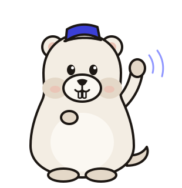

Your private cinema is almost open.
Seven short steps and Gonema will be finding films for you. You’ll need your download client and one indexer at hand.

- Secure the boothCreate the admin account30 s
- Connect film metadataA free TMDB key for posters and dates1 min
- Choose where films liveYour library folder30 s
- Connect a client and an indexerSABnzbd, NZBGet, qBittorrent, Deluge or Transmission2 min
- Pick a quality, add a filmAnd watch the first grab happen1 min
Secure the booth
One admin account protects the web interface and the API. You can add more people later.
Connect film metadata
Gonema uses The Movie Database for posters, cast, collections and release dates. The key is yours, free, and stays encrypted on this server.
- Create a free account on themoviedb.org.
- Open Settings › API and request a “Developer” key. Any short description is fine.
- Copy the API Read Access Token (the long one) and paste it below.
Choose where films live
Each film gets its own folder here. Gonema hardlinks finished downloads into it, so nothing is copied twice.
/data) into both Gonema and your download client, at the same path. If your client sees /downloads while Gonema sees /data/downloads, add a remote path mapping in the next step.Connect your download client
Gonema sends releases here and watches them until they’re ready to import.
docker logs qbittorrent), or set one in qBittorrent › Options › Web UI, then test again.Add an indexer
Where Gonema looks for releases: any Newznab (Usenet) or Torznab (torrent) indexer. Paste its API URL and key.
How should your films look?
Pick a starting point. Gonema grabs the first good copy, then keeps upgrading until it reaches the target. You can fine-tune everything later.
The first print is on its way.
You added Saltwater Hymn. Gonema searched 1 indexer, picked the best release and sent it to qBittorrent.
- Added to /data/movies, Cinema HD0.0 s
- Searched Nebula NZB: 18 releases, 5 accepted1.3 s
- Picked Saltwater.Hymn.2021.1080p.BluRay.x264-LUMEN +301.4 s
- Downloading 9.8 GB · 21.6 MB/s8 min